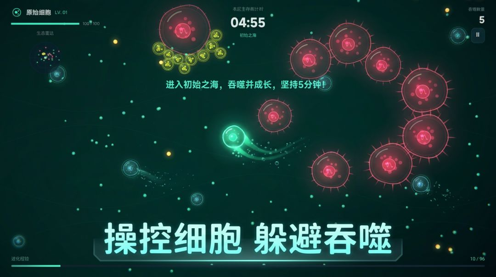
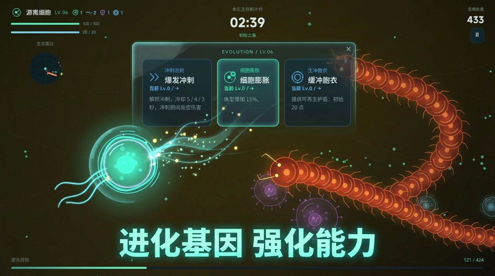
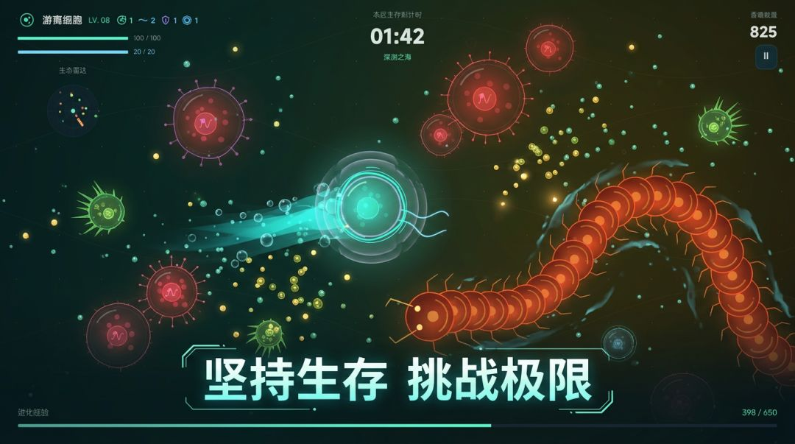

生存 Roguelike 《原胞：进化》
《原胞：进化》是一款灵感来源于 Agar.io 与吸血鬼幸存者的生存 Roguelike。你扮演原始海洋里的一个细胞，通过吞噬不断进化。
演示视频
游戏简介
吃下营养与其他细胞获取经验，每升一级从基因中三选一强化自己，穿越五个海域，最终击败终焉之海的领主。
开发者的话
第一次使用 TapTap Maker 单枪匹马制作并发布游戏，今后会不断更新各类功能和关卡！希望大家玩得愉快！
游戏截图


